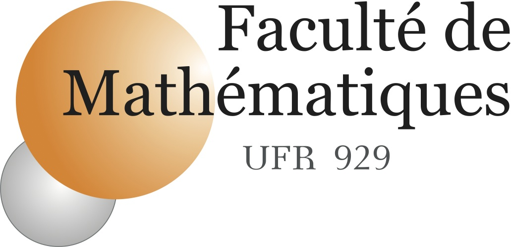
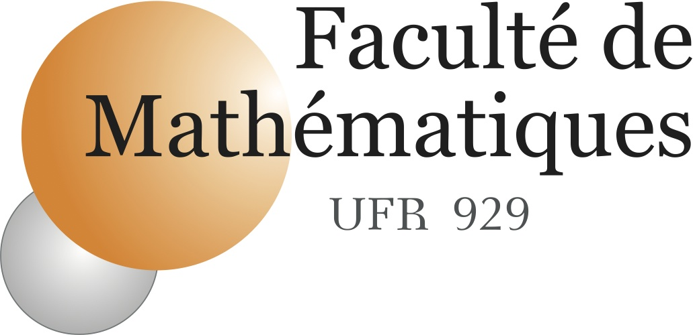
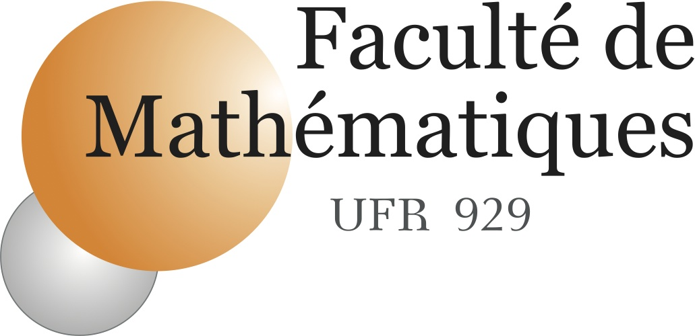

Sixth Workshop on Generic Solvers for PDEs:
FreeFem++ and its Applications
Paris, Jussieu, UPMC, December 9-10,11, 2014
The sponsors: ANR Becasim

Day 1: Tuesday, December 9
Morning session [
|
9h00-9h05 |
Introduction |
|
|
9h05-10h05 |
F. Hecht |
FreeFem++ solver: status and future (pdf) |
|
10h05-10h30 |
Coffee Break |
|
|
10h30-11H30 |
P. Jolivet |
FreeFem++ , mpi parallel solve (pdf) |
|
11h30-12h15 |
A. Le Hyaric |
FreeFem++-cs,
the FreeFem++ Graphical Interface
|
|
Lunch [ |
Afternoon session Freefem++ training sessions (please bring your laptop)
|
14h00-18h00 |
O. Pantz and I. Danaila |
Basic Tutorial (part 1): generate a mesh, solve a linear PDE, use the Newton method for nonlinear PDEs, use a formulation with matrices, examples with steady and time evolution simple PDEs. [ |
|
14h00- 18h00 |
F. Hecht |
Expert Tutorial (part 1): link with other softwares. [ |
|
18h30-20h00 |
FreeFem++ Discution [ |
Day 2: Wednesday, December 10th
Morning session [
Simulations of Bose-Einstein condensates (BECASIM session)
|
09h00-09h30 |
K. Ohmori, N. Yamaguchi |
Numerical investigation of two-fluid flows by FreeFem++(pdf) |
|
09h30-10h00 |
F. Ortegón and all |
Heat treating of steel Helical Gear (pdf, TermalProcessing pdf 12Mb, slides pdf 8.5Mb) |
|
10h00-10h30 |
Coffee Break |
|
|
10h30-10h50 |
A. Suzuki |
Numerical simulations of the Gross-Pitaevskii equation by pseudo-spectral and finite element methods(pdf) |
|
10h50-11h15 |
G. Vergez |
A FreeFem++ toolbox for computing stationary states of rotating Bose-Einstein condensates(pdf) |
|
11h15-11h45 |
Q. Tang |
Numerical simulation of the dynamics of the rotating dipolar Bose-Einstein condensates(pdf) |
|
11h45-12h30 |
L. Untereiner |
Visualization of Bose-Einstein Condensates |
|
|
|
|
|
Lunch[ |
Afternoon session Freefem++ training sessions (please bring your laptop)
|
14h15-18h00 |
F. Hecht and O. Pironneau |
Basic Tutorial (part 2): [ |
|
14h15-18h00 |
P. Jolivet |
Expert Tutorial (part 2): HPC with FreeFem++ [ |
Day 3: Thursday, December 11 th
Morning session [
Open Session for Contributors
Call for contributions: if you want to give a talk related to FreeFem++,
please send to hecht@ann.jussieu.fr a title and a short abstract with references before December 2 .
|
09h00-09h20 |
I. Bajc |
Driving metric mesh adaptivity in a nonlinear minimization scheme (pdf) |
|
09h20-09h45 |
J. Hammond |
An application of FreeFem++ with non-intrusive reduced basis methods. (pdf) |
|
09h45-10h10 |
B. Barrois |
Simulation des flux d’air dans une salle informatique (pdf) |
|
10h10-10h40 |
Coffee Break |
|
|
10h40-11h05 |
O. Moktari |
Débruitage et réhaussement à partir d'une équation de diffusion non linéaire; application à l'inpainting (pdf) |
|
11h05-11h30 |
P.H. Tournier |
Water and nutrient uptake by plant root systems. (pdf) |
|
11h30-11h55 |
P. Ventura |
Mutual admittance of an infinite periodic Surface Acoustic Waves transducer using an original coupled FEM/BIE numerical model(pdf,) |
|
12h55-12h20 |
M. Oumouni |
Numerical analysis and simulation of the spreading and dispersion using FreeFem++ (pdf) |
|
Lunch [ |
Afternoon session [
Open Session for Contributors
|
14h00- 14h30 |
M. Mint Brahim |
Hybrid Dual Raviart–Thomas FEM in composit media (pdf) |
|
14h30- 15h |
M. Giacomini |
A guaranteed a posteriori error estimator for certified boundary variation algorithm (pdf, pdf slides) |
|
15h00-15H30 |
J. Mullaert |
Numerical Methods for Incompressible Fluid-Structure Interaction(pdf) |
|
15h30-16h00 |
Coffee Break |
|
|
16h00- 16h30 |
A. Suzuki, F. X. Roux |
A dissection solver with kernel detection for unsymmetric matrices in FreeFem++ (pdf) |
|
16h30- 17h15 |
F. Ben Belgacem |
A Finite Element Method for an Ill-posed Oxygen-Balance Model pdf |